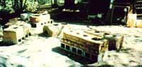

In many parts of the Third World, earthen stoves are reducing energy needs and changing traditional methods of food preparation. Now you can build one of the efficient cookers yourself.
PHOTOS BY THE AUTHOR
The front damper of this lorena cooker slides on a pair of runners.
CROSS SECTION
Earthen stoves can be custom-built to your design and can feature, for instance, up to four potholes.
Larry Bradshaw
Louga, Voltena, Kaya, Chula, and Lorena... the terms sound like mysterious incantations from a sorcerous ritual. Actually, though, they're all types of simple earthen stoves . . . do-it-yourself appliances that promise to revolutionize cooking-and reduce fuel consumption levels-on a global scale.
Developed, for the most part, by students of appropriate technology working with native peoples, sand/clay cookstoves are beginning to replace traditional fuel-gobbling open fires in the Third World . . . where deforestation, desertification, and dependence on imported fuels have long plagued developing nations. Thanks to the earthen heaters' simple construction, low cost, and convenience of operation, staff members of such international aid organizations as Volunteers in Asia, Save the Children, and Volunteers in Technical Assistance (VITA) have successfully introduced the relatively efficient units to areas of Africa, Asia, and South America.
And, impressively enough, this growing "kitchen revolution" has already decreased wood usage sufficiently to allow many such regions to take the first hesitant steps toward reforestation: The cookers can, you see, conserve as much as 50% of the wood (or charcoal) that would be required to prepare the same food over an open fire. And, on a more personal scale, earthen stoves provide safer cooking conditions . . . and produce less smoke, thus lowering the risk of related respiratory ailments.
Furthermore, while the initial motivation behind the development of mudstoves was the overwhelming need to ease the serious energy crisis facing Third World countries, the simple-to-build units could certainly be valuable to many people in North America as well. The fact is that anyone who'd like an attractive, inexpensive outdoor stove (to be used, perhaps, for summer canning and baking or even barbecuing) could do a lot worse than to build an earthen cooker.
WHAT IT'S MADE OF
In essence, a mudstove is little more than a firebox enclosed by an earthen mass usually made of sand and clay, building materials that are commonly available at little or no cost. Simplicity is the key to the cookers' design, and the construction details can be altered to suit individual needs.
Fine sand can, of course, be found along the edges of streams and at the ends of rain washes. Once collected, the grains should be sieved, through a 4mm screen mesh, to remove pebbles and other foreign matter. Clays, in turn, can often be easily scouted out in roadcuts and ditches, and along streambeds with exposed banks. If you have trouble finding a source of clay, though, local potters and agricultural extension agents might be able to help search out nearby deposits. As you'd imagine, sandy clays are especially well suited for use as stove materials, while silt should be avoided. (You should clean freshly dug clay by first drying it and then sifting the "dust" through a 5mm mesh.)
To determine the suitability of a clay sample, just wet a handful and work it into a pliable consistency. Then try to mold a thick rope of it around your finger: The mud should retain its workable state and form a ring easily. If it does, you can next flatten out the test piece into a rough tile (1/4" or more in thickness), dry it, and "bisque" it in a small fire. After the flames die, leave the clay tile in the hot coals for half an hour, then remove it to cool. The finished piece should resist crumbling when scratched or pinched.
MIXING THE SAND AND CLAY
Once a generous quantity of raw material is collected (your own stove design will determine exactly how much you'll need, but do gather roughly three to four times more sand than clay), you're ready to produce a mix with the proper consistency. Appropriate combinations can range-depending upon the specific characteristics of the substances used-from a sand/clay ratio of 2:1 up to one of 5:1.
The ingredients, in dry form, should first be thoroughly mixed and ground under foot on a clean surface. When the clay appears to be well pulverized into the sand (30 minutes of mixing for a 20-gallon batch isn't unusual), water is added slowly, ground in, and then shovel-mixed.
The most reliable method of testing for the correct sand/clay/water proportions is to make and compare sample bricks from several different mixtures. Use a hammer handle, a length of 2 X 4, or your fist to compact the material into thoroughly wet rectangular wooden frames. Be sure to compress it until your finger can't penetrate the surface deeper than about 1/2 inch, and be especially careful to pack down the mix along the edges and in the corners... where the finished bricks are most likely to split or crumble. Then remove the molds and leave the blocks to dry in the sun (remembering to turn them regularly to assure even drying).
The success or failure of any particular sample mixture will be readily apparent: If cracks form across a test brick's surface, you've got too much clay (resulting in quick shrinkage)... if crumbling around the edges occurs with reasonably gentle handling, there's too much sand. The ideal blend of the two components will yield a dry block which-although it'll shatter if struck sharply-has good cohesion and compressive strength.
PLANNING AND SHAPING THE STOVE
After you've determined the best possible recipe and mixed your raw materials, you can begin to shape the huge lump of earth into a cookstove. While there are many different designs in use around the world, we'll concentrate here on the lorena stove, a versatile cooker that was originally developed in the highlands of Guatemala and is now being used in several other Central American countries. Its name, by the way, is a composite of the Spanish words for mud ( lodo ) and sand ( arena ).
This particular design allows hot gases from the fire to traverse a tunnel that winds through the stove's body, and then to exit via a simple chimney. While topside cooking is in progress, the lorena's great earthen mass stores heat, which can then be used for extended food warming or for baking . . . even after the fire has died out. The rate of burn is controlled by adjusting one crude but effective scrap-tin damper at the opening of the firebox and another just in front of the exit flue.
The cooking pots fit tightly into deeply recessed holes on the stove's upper surface. It's best to limit the number of potholes to no more than three, but their size and shape will depend upon the specific utensils you plan to use. The tunnel must pass under and connect the holes . . . forming a bend beneath each pot to assure maximum heat transfer.
You'll probably want to sketch an outline of the stovetop on the ground or floor next to the construction site in order to determine the dimensions and placement of the potholes and the position of the flue. Using that drawing as a guide, you can go on to form first a solid, level base, either of lorena mixture or of stone or old brick (which is needed because any shifting of the foundation could cause cracks in the stove's body, and which can also elevate the unit to a convenient height) and then the stove itself, working upward in straight vertical lines.
The stove body will be built up, in layers, to form a solid block . . . into which you'll later carve the potholes and tunnel. Start by shoveling some of the lorena mixture onto the base and spreading it out to an overall depth of five or six inches. Then compress the material with a homemade wooden tamper (again, a piece of 2 X 4 will do) as you did the test blocks.
Add successive layers in the same manner, taking care always to maintain the stove's vertical line. When tamping near the perimeter of the structure, you'll need to support the outer edge with a wooden frame . . . using either right-angled or curved forms at the corners, depending on the shape you've chosen. As you build, make sure all the layers of lorena have the same consistency, in order to create a strong, unified mass . . . and always cover the block with a plastic sheet whenever you have to stop work. (If the material becomes too dry at this point, the interior carving that'll be done later will be quite difficult.)
The finished height of the stove will depend on the depth of its largest pot: Align that container's rim with the cooker's top edge, and then make sure there's a good six to eight inches of solid lorena between the pot's bottom and the stove's base, to allow room for tunneling. When the block finally reaches the proper height, scribe the position of the pots, the tunnels, and the chimney hole on its surface. As you lay out the design, be sure to leave a three- or four-inch margin (about the width of a fist) between the potholes and the stove's edge.
CARVING THE TUNNELS
Just as the lorena stove can be molded from simple materials,. it's also carved with rudimentary tools. In fact, a large metal Spoon is all you'll need for scraping out the firebox and the inner passageways. Remember, though, to keep your utensil wet, and to leave an insulating layer of lorena ( at least two inches thick) between the foundation and the bottom of the firebox and tunnel.
Begin burrowing by cutting into one side of the block to form the firebox. That opening needs to be large enough to accommodate the fuel you'll be using, but-for maximum efficiency-it should be no longer or wider than the first pothole . . . which, in most lorena stoves, rests directly over the firebox.
Next, rough out the potholes . . . checking the fit of each utensil in its assigned "nest" from time to time. At this stage, however, let the holes stay slightly undersized, since their final forms are best shaped after the rest of the carving is completed. Leave a bit of shoulder to support the bottom of each pot, and then dig about four inches deeper than that (go down six inches or so under the first pot, to make room for the fire) to the level that will become the floor of the heat passageway. You can scoop out the chimney hole at this time, too.
Once all the holes are properly spaced along the top of the stove, go on to complete the internal tunneling. Reach through the firebox and other openings as necessary, and dig carefully along your inscribed path, intercepting each pothole and-finally-the chimney hole. Once it progresses past the firebox, the tunnel should be made large enough to accommodate-just barely-the width of a hand holding three eggs. To insure an even flow of hot gases and smoke, the passage must also be relatively smooth and gently curved.
Following that excavation process, the potholes can be "fine-tuned" so that they'll allow the cooking utensils to fit securely in place. Use the containers themselves as tools (remembering to wet their outer surfaces first), by twisting and easing them into place . . . without putting any significant weight on them while doing so. To insure that it gets the maximum exposure to the heat circulating inside the stove, each pot should be recessed until its rim is almost level with the stove surface.
INSERTING THE DAMPERS AND BAFFLES
With the digging and shaping completed, it's time to install the dampers. The front closure can simply be attached to the outside of the stove with runners (as shown in the photo), and a flue damper can be integrated conventionally into the length of stovepipe that will be inserted into the chimney hole. Or slots may be cut into the stove body itself-across the firebox entrance and in front of the chimney hole, as indicated in the drawings-to accommodate pieces of thin sheet metal cut to size and bent at the top to form handles. Make the slots by carefully easing a large knife or machete down into the lorena-using gentle pressure-and working the tool slowly (to prevent cracks) as you form the vertical slits.
The last additions to your homemade cooker will be the baffles, which act as airfoils to direct the flow of hot gas and flame toward the bottoms of the pots. Each baffle-which is actually made from an extra lump of fresh lorena-is formed at the juncture of tunnel and pothole, and rises to within two inches of the pot bottom. Cupping a hand downward, you can easily form the baffle and press the mix in place.
A FEW FINAL TOUCHES
To polish off your handmade stove, you'll need to burnish the block's surface (inside and out) with a smooth rock or the back of a spoon. That finishing process helps to seal the surface against abrasion and spills . . . but you might want to increase the durability of the lorena even further with a thin coat of oil or paint, or a cement or plaster wash. Any sharp corners should, at this time, be rounded with a wet knife.
Depending on your climate and the stove's location, the hand-formed appliance will take from two to four weeks to cure completely. By setting occasional small fires in the stove during that period, you can hasten the drying process . . . and satisfy your curiosity as to how well your creation will function! Shrinkage should be very slight (thanks to the material's high sand content), but the pots and stovepipe will probably need to be adjusted in their holes now and then as the stove cures. Don't worry about the small surface cracks that'll probably appear while the lorena is drying: They're not a serious threat.
The sand and clay mixture is, of course, water soluble ... so it can easily be reconstituted should you need to repair more serious structural cracks or a damaged edge. Just lightly score around the blemish and dampen the area down to accept patching. (Larger sections should be terraced and then rebuilt in layers.) In the unlikely event of a cave-in, the collapsed wall can even be repacked with fresh lorena and retunneled.
On the other hand, a water-soluble stove must be protected from rain. If you've built it outdoors, either provide it with a crude shed roof, or cover the cooled cooker with a plastic tarp after each use.
THE LORENA IN OPERATION
A lorena stove, when properly made, will be quite functional and durable . . . and should provide reliable service for a number of years. The following general pointers on "the joy of cooking" with mudstoves should provide you with all the basic instruction you need. (Remember, though, that each lorena is unique, and can be expected to demand that you learn the "tricks" required for its most efficient operation.)
The pot that sits over-or closest to-the firebox will, obviously, be the hottest. The second, while still quite warm, is usually better suited to simmering and slow-cooking. The pot farthest from the fire receives only residual heat, so it's generally best used for such tasks as keeping a supply of water warm (for washing and so on).
Remember that while the stove is in operation, careful adjustment of the dampers will greatly increase the unit's efficiency. And after you're through cooking on the surface, the heat trapped in the lorena's mass can be used for baking. To turn the firebox into an oven, first clear out all the coals . . . place wrapped food inside . . . close both dampers . . . and cover the open potholes to retain radiant heat.
If built indoors , a lorena stove can be modified to provide thermal storage for home heating ... by extending the tunnel past the last pothole and through a second-connected-mass of packed clay and sand that will, of course, absorb more of the heat left over from cooking. If you like, this appendage can even be shaped to your specific needs . . . perhaps as a radiant "hot seat" or a platform for a small warmed bed. Because of the mass involved, the surface temperature of such an accessory will rarely rise above a comfortable level, but that heat will be retained for a good long time. (If you do construct an additional earthen section, though, you'll have to include removable tiles or bricks along its tunnel route, to permit access for cleaning out built-up soot, ash, and creosote.)
In order to exploit the absorbed heat even further (after all, why waste "free" energy?), it's possible to route a cast-iron pipe through the accessory mass as you build it (this should not intersect the flue tunnel). A small fan can be placed at one end to pull in room air, which will be warmed as it passes through the tube, and blow it out the other end.
Of course, the ideas presented here are only a few of the possible variations on a basic concept. You can see that-whether it's used as an outdoor cooker or as an indoor source of heat for a home, garage, or workshop-the earthen stove is a simple invention with profound ramifications. By allowing for increased local self-reliance, requiring only readily gathered materials, and conserving precious fuel, this fine example of soft technology offers hope for the deforested Third World ... as well as an alternative to the often wasteful appliances typical of our own industrialized society.
EDITOR'S NOTE: For more details on earthen stove construction, you can order a book entitled Lorena Owner-Built Stoves from Volunteers in Asia (Dept. TMEN, P.O. Box 4543, Stanford, California 94305). The 144-page paperback, published in 1979, costs $4.00 plus $1.00 shipping and handling.
|
|
|
 |
|
|
|
|